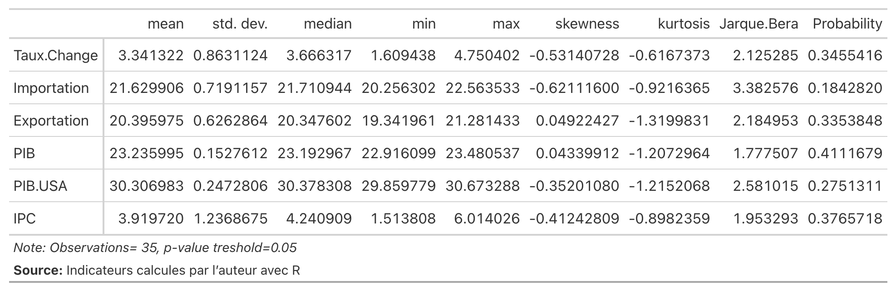

Test de Normalite des Variables sous etudes
Jarque Bera test
Test d’Hypothèse de Jarque-Bera :
Hypothèse Nulle (H₀) : Les données proviennent d’une distribution normale.
Hypothèse Alternative (H₁) : Les données ne proviennent pas d’une distribution normale.
Statistique de Jarque-Bera :
La statistique de Jarque-Bera (JB) est définie comme suit :
\[JB = \frac{n}{6} \left( S^2 + \frac{(K-3)^2}{4} \right)\]
Où :
- n est la taille de l’échantillon.
- S est le coefficient d’asymétrie de l’échantillon.
- K est le coefficient d’aplatissement de l’échantillon.
Cette statistique suit une distribution du chi carré avec 2 degrés de liberté sous l’hypothèse nulle (H₀).
Litterature du Test de Jarque Bera
Le test de Jarque-Bera est un test statistique utilisé pour évaluer si un échantillon de données donné présente un coefficient d’asymétrie et un coefficient d’aplatissement qui sont approximativement distribués selon une loi normale, ce qui est une hypothèse courante dans de nombreuses techniques statistiques.
- Comparaison de la statistique de test à la valeur critique :
La statistique de test de Jarque-Bera suit une distribution du chi carré avec 2 degrés de liberté sous l’hypothèse nulle. Par conséquent, vous comparez la statistique de test calculée à la valeur critique de la distribution du chi carré avec 2 degrés de liberté à votre niveau de signification choisi (par exemple, 0,05 ou 0,01).
- Prise de décision :
Si la statistique de test calculée est supérieure à la valeur critique, vous rejetez l’hypothèse nulle, concluant que les données ne proviennent pas d’une distribution normale.
Si la statistique de test calculée est inférieure ou égale à la valeur critique, vous ne rejetez pas l’hypothèse nulle, ce qui indique qu’il n’y a pas suffisamment de preuves pour conclure que les données ne proviennent pas d’une distribution normale.
Rappel sur la notion de P-Value
Dans le cadre du test de Jarque-Bera, la p-valeur est une mesure cruciale pour interpréter les résultats du test. Voici comment interpréter la p-valeur :
Si la p-valeur est inférieure au seuil de signification (α) :
Cela signifie que la probabilité d’observer les données (ou des données encore plus extrêmes) sous l’hypothèse nulle (que les données proviennent d’une distribution normale) est faible. Vous rejetez alors l’hypothèse nulle au niveau de signification α. En d’autres termes, vous avez suffisamment de preuves pour conclure que les données ne suivent pas une distribution normale en termes d’asymétrie et/ou d’aplatissement. Si la p-valeur est supérieure au seuil de signification (α) :
Cela signifie que la probabilité d’observer les données (ou des données encore plus extrêmes) sous l’hypothèse nulle est élevée. Vous ne rejetez pas l’hypothèse nulle au niveau de signification α. En d’autres termes, vous ne disposez pas de suffisamment de preuves pour conclure que les données ne suivent pas une distribution normale en termes d’asymétrie et/ou d’aplatissement. En résumé :
Une p-valeur faible suggère des preuves en faveur du rejet de l’hypothèse nulle, indiquant que les données ne suivent probablement pas une distribution normale. Une p-valeur élevée suggère un manque de preuves pour rejeter l’hypothèse nulle, ce qui signifie que les données pourraient suivre une distribution normale. Il est important de choisir un seuil de signification approprié (α) avant d’interpréter la p-valeur. Les valeurs typiques pour α sont 0,05 ou 0,01, mais cela dépend souvent du contexte de l’analyse et des normes de l’industrie.
Conclusion du Test de Jarque Bera des series
On ne peut rejeter l’hypothese nulle pour aucune des series parce que \(p \ge \alpha, \alpha = 0.05\)